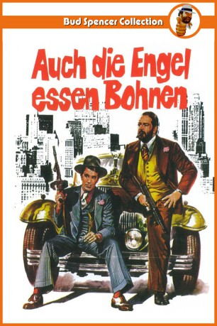
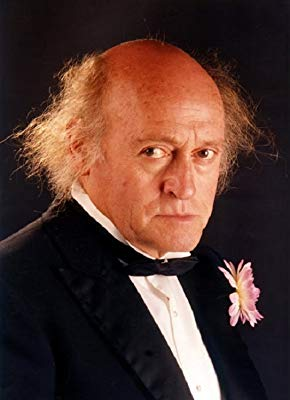
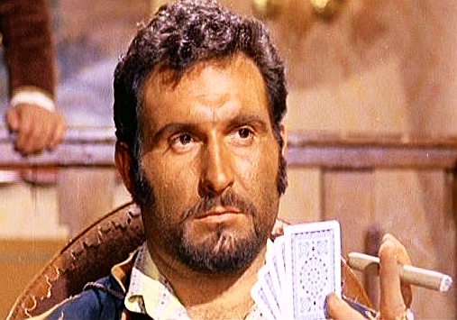

#4376 Auch Engel essen Bohnen
Alternativ: Even Angels Eat Beans (Englischer Titel)
 
 IMDB-Wertung: 6.3 / 10
IMDB-Wertung: 6.3 / 10  Metascore: 0
Metascore: 0 
Chicago in den späten 20ern: Charlie, genannt der Dicke, verdient seinen Lebensunterhalt mit Catchen. Seine Kraft ist bekannt und gefürchtet. Er hat nur eine Schwäche: Er hasst es zu verlieren. Deshalb durchkreuzt er auch die Pläne des New Yorker Mafia-Paten Don Angelo, der eine hohe Summe auf seine Niederlage gesetzt hat. Zusammen mit dem Tagträumer & Kleinganoven Sonny muss er sich nun eine geeignete Antwort für den Paten überlegen. Kurzerhand verdingen sich die beiden selbst als Geldeintreiber, und vermiesen so der Mafia das Geschäft mit der Schutzgelderpressung. Leider geraten sie damit auch ins Visier der Polizei. Aber der Dicke wäre nicht der Dicke, wenn er nicht mit einigen gezielten Dampfhammerschlägen alle Probleme lösen könnte…
Jahr: 1973
Dauer: 125 Minuten
FSK: 16
Land: Studio: Constantin FilmTonspuren:
Untertitel:
Auflösung: 1080p (1920x1080) Größe: 10342 MB
Genre: Action, Komödie, Krimi
Regisseur: Enzo Barboni
Drehbuch: Dodie Smith
Soundtrack:
Darsteller:
 Giuliano Gemma als Sonny
Giuliano Gemma als Sonny Bud Spencer als Charlie Smith
Bud Spencer als Charlie Smith- Robert Middleton als Angelo
 George Rigaud als Senator O'Riordan
George Rigaud als Senator O'Riordan Mario Brega als Angelo's Weapon Master , uncredited
Mario Brega als Angelo's Weapon Master , uncredited Alvaro Vitali als Tailor Assistant , uncredited
Alvaro Vitali als Tailor Assistant , uncredited- Bill Vanders als Inspector Mackintosh
- Riccardo Pizzuti als Angelo's Right Hand
- Lara Sender als Gerace's Daughter
- Steffen Zacharias als Gerace
- Francy Fair als Salvation Army Speaker
- Claudio Ruffini als Wrestling Referee Jim Baxter
- Patrik Morin als
-  Víctor Israel als Giudà
- Gérard Landry als Spectator at the Catch contest
- Fortunato Arena als Policeman
- Marcello Verziera als Angelo's Thug
- Enrico Chiappafreddo als McIntosh's Partner
- Margherita Horowitz als Geraces Wife
- Denise Bataille als Dancer
- Luigi Antonio Guerra als
- Ricardo Palmerola als John O'Donnell
- Richard Kolin als Tim O'Hara
- César Ojinaga als Croupier
- Roberto Alessandri als Cop choking Charlie , uncredited
- Artemio Antonini als Angelo's Cook , uncredited
- Salvatore Baccaro als Angelo's Poison Tester , uncredited
- Giancarlo Bastianoni als Angelo's Thug , uncredited
- Luigi Bonos als Italian Merchant , uncredited
- Miquel Bordoy als (uncredited
 Omero Capanna als Angelo's Thug , uncredited
Omero Capanna als Angelo's Thug , uncredited- Nestore Cavaricci als Angelo Henchman , uncredited
- Pietro Ceccarelli als Angelo's Hitman , uncredited
- Giovanni Cianfriglia als Angelo's Hitman #2 , uncredited
- Michele Cimarosa als Mafia debitor , uncredited
- Dante Cleri als Tailor , uncredited
- Ermelinda De Felice als Giovanelli's Wife , uncredited
- Paolo Figlia als Hitman , uncredited
- Veriano Ginesi als Angelo's Banker , uncredited
- Giulio Maculani als Debitor , uncredited
- Enzo Maggio als Italian Merchant #2 , uncredited
- Furio Meniconi als Wrestling Coach , uncredited
-  Emilio Messina als Wrestler , uncredited
- Roberto Messina als Wrestler #2 , uncredited
- Romano Milani als Masseur , uncredited
- Benito Pacifico als Don Calosimo Thug , uncredited
- Arrigo Peri als Cook , uncredited
- Franca Scagnetti als Woman in the Burning Room , uncredited
- Angelo Susani als Shot Man , uncredited
- Franco Ukmar als Angelo's Thug , uncredited
Datei: X:\Person\Bud Spencer + Terence Hill\Auch Engel essen Bohnen (1973, FSK16, 1920x1080).mkv seit 13.09.2016
Festplatte: HD Collection-7+mehr(A-Z)+Person
 Es gibt insgesamt 43 Filme in der Gruppe 'Person\Bud Spencer + Terence Hill'
Es gibt insgesamt 43 Filme in der Gruppe 'Person\Bud Spencer + Terence Hill'